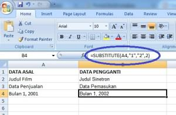
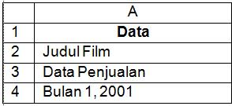

SUBSTITUTE: mengganti teks
SUBSTITUTE mengganti bagian tertentu dari teks dengan teks lain, tanpa mengubah posisi lain.
=SUBSTITUTE(teks; lama; baru; [urutan])
| teks | Teks sumber |
|---|---|
| lama | Bagian yang diganti |
| baru | Penggantinya |
| urutan | Opsional, hanya ganti kemunculan ke-n |
Langkah praktik
- Ketik =SUBSTITUTE(A2;"-";"/") untuk mengubah semua strip menjadi garis miring.
- Tambahkan angka urutan bila hanya ingin mengganti kemunculan tertentu.
Tangkapan layar praktik

